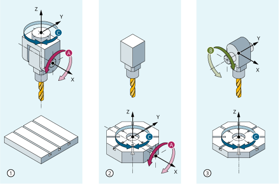

Die Verfahrbewegungen der programmierbaren Orientierungen hängen primär vom Maschinentyp ab. Bei der Drei-, Vier- und Fünf-Achs-Transformation mit TRAORI beschreiben die rotatorischen Achsen oder die schwenkbaren Linearachsen die Orientierungsbewegungen des Werkzeugs.
Änderungen der Positionen der an der Orientierungstransformation beteiligten Rundachsen führen zu Ausgleichsbewegungen der übrigen Maschinenachsen. Die Position der Werkzeugspitze bleibt dabei unverändert.
Orientierungsbewegungen des Werkzeugs können über die Rundachsbezeichner A…, B…, C… der virtuellen Achsen je nach Anwendung entweder durch Angabe von Euler- bzw. RPY-Winkeln oder Richtungs- bzw. Flächennormalenvektoren, Normierte Vektoren für die Drehachse eines Kegels oder für die Zwischenorientierung auf einer Kegelmantelfläche programmiert werden.
Bei der Kinematischen Transformation mit TRANSMIT, TRACYL und TRAANG transformiert die Steuerung die programmierten Verfahrbewegungen des kartesischen Koordinatensystems auf die Verfahrbewegungen der realen Maschinenachsen.
Es kann entweder das Werkzeug oder der Werkzeugtisch mit bis zu zwei Rundachsen drehbar sein. Eine Kombination von jeweils einachsigem Schwenkkopf und Drehtisch ist auch möglich.
① | Maschinentyp 1 mit der Achsfolge CA
|
② | Maschinentyp 2 mit der Achsfolge AC
|
③ | Maschinentyp 3 mit der Achsfolge BC
|
Maschinentyp | Programmierung der Orientierung |
|---|---|
Drei-Achs-Transformation Maschinentypen 1 und 2 | Programmierung der Werkzeugorientierung nur in der Ebene, die senkrecht zu der rotatorischen Achse ist. Es existieren |
Vier-Achs-Transformation Maschinentypen 1 und 2 | Programmierung der Werkzeugorientierung nur in der Ebene, die senkrecht zu der rotatorischen Achse ist. Es existieren |
Fünf-Achs-Transformation Maschinentypen 3 | Programmierung der Orientierungstransformation. Kinematik mit |
Generische 5/6-AchsTransformationen
Maschinentyp | Programmierung der Orientierungstransformation |
|---|---|
Generische Fünf-/Sechs-Achs Transformation Maschinentypen 4 | Programmierung der Orientierungstransformation. Kinematik mit |
Beim Aufruf der "Generischen Drei-, Vier- und Fünf-/Sechs-Achs Transformation" kann zusätzlich die Grundorientierung des Werkzeugs übergeben werden. Es gelten die Einschränkungen bezüglich der Richtungen der Rundachsen nicht mehr. Wenn die Rundachsen nicht exakt senkrecht aufeinander stehen oder vorhandene Rundachsen nicht exakt parallel zu den Linearachsen stehen, kann die "Generische Fünf-/Sechs-Achs Transformation" bessere Ergebnisse der Werkzeugorientierung liefern.
Für Fräsbearbeitungen an Drehmaschinen oder einer schräg zustellbaren Achse beim Schleifen gelten abhängig von der Transformation im Standardfall folgende Achsanordnungen:
TRANSMIT | Aktivierung der Polar-Transformation |
|---|---|
stirnseitige Bearbeitung in der Drehaufspannung | eine Rundachse |
TRACYL | Aktivierung der Zylindermanteltransformation |
|---|---|
Bearbeitung von beliebig verlaufenden Nuten an den zylindrischen Körper | eine Rundachse |
TRAANG | Aktivierung der Transformation Schräge Achse |
|---|---|
Bearbeitung mit schräger Zustellachse | eine Rundachse |
Die Bewegung der Maschine erfolgt in Maschinenkoordinaten und wird programmiert mit:
TRAORI | Aktivierung der Transformation |
|---|---|
PTP Punkt-zu-Punkt-Fahren | Position im kartesischen Koordinatensystem (MKS) anfahren |
CP | Bahnbewegung der kartesischen Achsen im (BKS) |
STAT | Stellung der Gelenke ist abhängig von der Transformation |
TU | Um welchen Winkel die Achsen auf den kürzesten Weg verfahren |
PTP-Fahren bei generischer 5/6-AchsTransformation
Die Bewegung der Maschine erfolgt in Maschinenkoordinaten und die Werkzeugorientierung kann sowohl mit Rundachspositionen als auch mit von der Kinematik unabhängigen Vektoren Euler bzw. RPY-Winkel oder den Richtungsvektoren programmiert werden.
Dabei sind Rundachsinterpolation, Vektoreninterpolation mit Großkreisinterpolation oder Interpolation des Orientierungsvektors auf einer Kegelmantelfläche möglich.
Die Werkzeugmaschine hat mindestens 5 Achsen, davon
Drei translatorische Achsen für geradlinige Bewegungen, die den Arbeitspunkt an jede beliebige Position im Arbeitsaum bewegen.
Zwei rotatorische Schwenkachsen, die unter einem projektierbaren Winkel (meist 45 Grad) angeordnet sind, ermöglichen dem Werkzeug Orientierungen im Raum einzunehmen, die sich bei 45 Grad Anordnung auf eine Halbkugel beschränken.
Siehe auch:
Übersicht der Transformationsarten